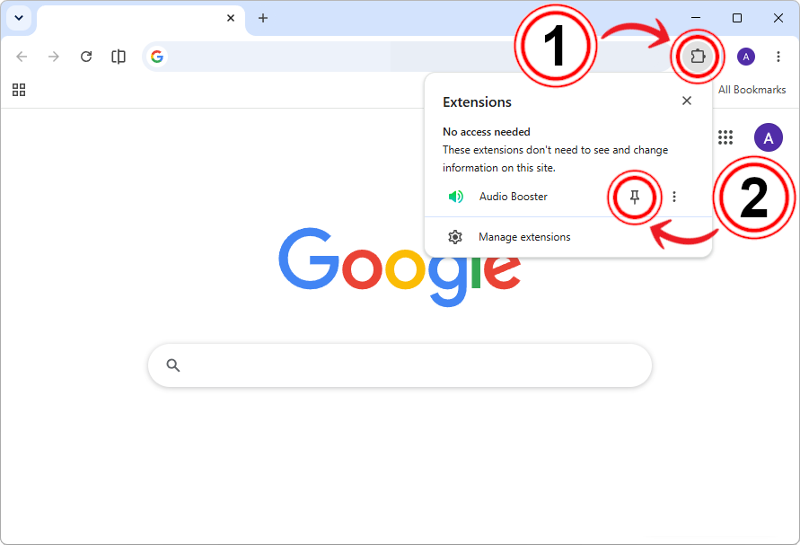
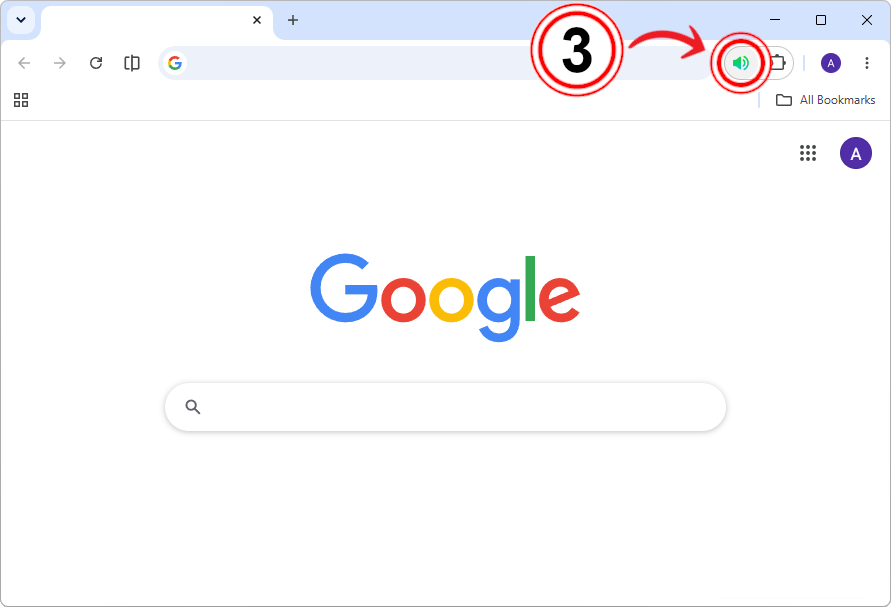

Finish Audio Booster installation
- Click the icon to open the extensions menu.
- Click the to pin the extension for quick access to Audio Booster.

- Click the Audio Booster icon to open the popup.

You're all set — you can close this page and start boosting audio from the extension.